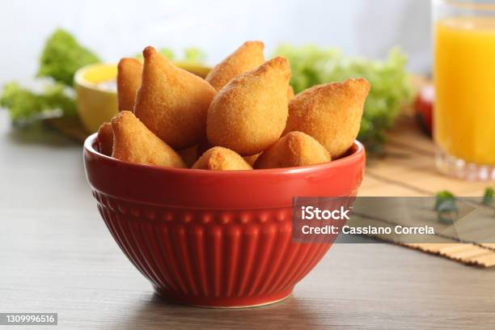

Coxinha

Description
Coxinha is a popular Brazilian snack made of chicken-filled dough shaped like a drumstick, breaded, and deep-fried to golden perfection. It's crispy on the outside and tender on the inside.
Ingredients
- Chicken breast (cooked and shredded)
- Onion
- Garlic
- Chicken broth
- Flour
- Butter
- Eggs
- Bread crumbs
- Salt and pepper
Steps
- Cook chicken with onion and garlic, shred it, and mix with some chicken broth to create a filling.
- Prepare dough by heating butter, broth, and flour until thickened.
- Shape the dough into small ovals, stuff with chicken filling, and seal the edges.
- Dip each coxinha in egg wash and coat with breadcrumbs.
- Deep fry until golden and crispy, then drain on paper towels.
Go Back